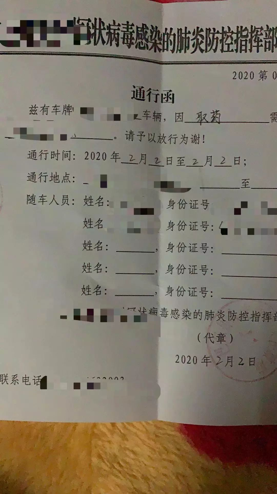
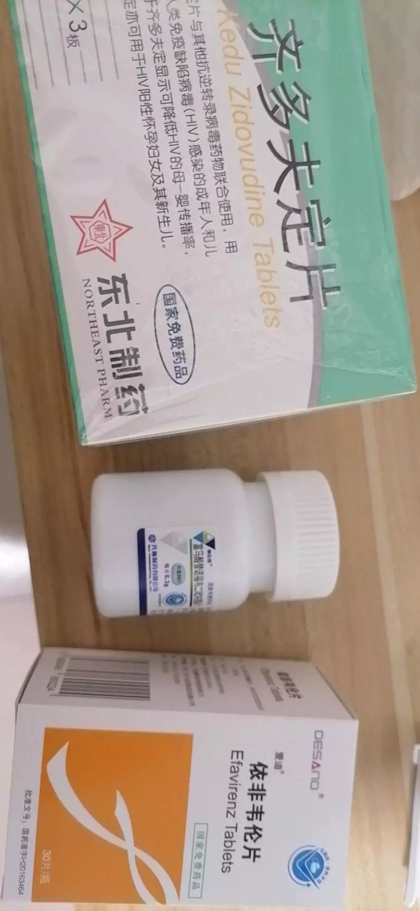
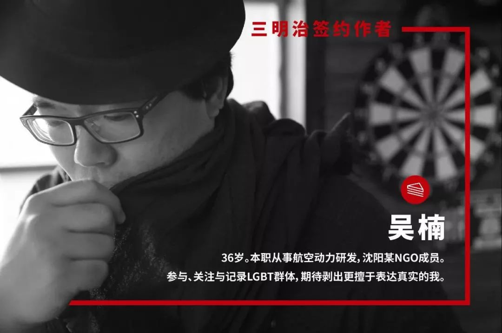

武汉封城下的艾滋感染者
原文链接 备份链接 文 | 吴楠 投稿邮箱 | gayspot_edit@163.com 1月27日14时16分，吕默在朋友圈发了一条视频，拍摄的是湖北武汉盘龙城大桥的封桥状况：将近三十个红色一米高的塑料灌沙路挡排成一排，阻挡住几乎空荡荡 …

文｜吴楠
武汉人宋耀的”过早”（武汉方言，意为吃早饭）随着1月23日的武汉封城一同取消了。
从那天起，上午十点半、十一点，成了宋耀的起床时间，“我也不要去上班，起得太早在家里又觉得很闷，还不如晚点起床，起床就吃饭。”
洗漱之后，老妈已经将午饭做好。一家三口都是土生土长的武汉人，就算是西红柿炒鸡蛋，里面也会放上一点辣椒借借味道。
每顿饭之后，宋耀都要去卫生间“刷牙”。一开始，老爸老妈觉得很诧异，“在外面工作了将近四年，回到武汉以后，怎么还多了这么一个饭后刷牙的习惯？”
宋耀是绝对不会告诉家人的。他是一名已经服药两年多的艾滋病感染者。最近这一年，他为了减少服用抵抗艾滋病毒的药物的副作用头晕、宿醉感，已经将国内免费的一线药物组合替依拉中的部分药物用利匹韦林代替（《为了活下去，那些海外淘药的艾滋病感染者》），“头晕倒是没有了，但是也麻烦，这个药必须随餐服用，不然就没有效果。” 所以，他每天中午吃完饭，都要到卫生间“刷牙”。
1
1月22日，39岁的宋耀还没有戴口罩的意识。他的烟瘾很大，戴口罩的话，抽烟不方便。没人能看得出来，因为工作每天都要四处奔走、和农民工打交道最多、甚至动不动就要吼几句的大嗓门宋耀，竟然得了慢性病，需要终生服药。
那天，宋耀开车去了武汉市郊，把老爸老妈接到自己买的房子里。这也是他回到武汉这两年的习惯，每次过年都在他买的房子里过，“和爸妈说，市区里面比较热闹。武汉人都爱热闹的，”宋耀的声音里透着笑意，“其实也有自己的小九九，与其带着几天的药回家，一不小心就会发现，还不如在自己的主场。我爸我妈还真没有乱翻东西的习惯。”
过年，对于艾滋病感染者来说，就是“过关”。就算没有这一次的疫情，寻常日子里，感染者都要想方设法地将药物掩人耳目地带在身边、按时服用，更不要提回家过年了。就连疾控中心的工作人员或者定点医院的医生在每次过年前，都会叮嘱，“千万多取一个月的药，回家过年不知道会遇到什么情况。”但不是所有的感染者都敢带半个月以上的药量回家。压制艾滋病毒的药的模样让人看一眼就难以忘记，糖衣的颜色是少见的粉蓝嫩黄（国内部分药物的颜色，下同），药片的巨大也让人觉得疑惑，什么药可以比善存片还要大上一圈？虽然半个月的药量放在一个普通的维生素药瓶里绰绰有余，但没有感染者愿意冒如此大的风险，让家人产生不必要的怀疑，以及后续无休止的麻烦。
“药太多，很容易被发现。”一位不愿透露姓名和住址的艾滋病感染者说。这名病友是从东北回到武汉过年的。他只带了七天的药，“预计的是最晚初六回来。”但是他没料到，1月23日的武汉封城命令下达后，“火车站、高速、机场都没有立刻封闭，居然还有几个小时的时间可以离开！”在他看来，这是一线生机。
1月23日早上六点多，他就对父母说，“我必须要走。”他的父母非常反对，“封城而已，你慌什么？家里的年货这么多，有吃有喝，你就安心在武汉呆着。”
换作没有感染艾滋病前，他是会留下来的，“但是现在不一样啊！药就是命。我留下来，一旦药吃光了，命就没了。”
离开武汉的路并不容易。病友买不到直接回东北的航班，他又不敢去北上广深这样的一线城市，“我们一家人都没有任何症状。”但他心里还是紧张，一线城市的管控一定十分严格，于是他打算定从武汉到南京的高铁票，然后从南京再回东北。但事与愿违，高铁票也订不到，但最后他找到了一个从武汉去南京的自驾车，“我甚至想去河南了，但幸好找到了到南京的车。”
病友一直在催车主再快一点来接自己，而此时他的父母在最后一刻看到儿子的坚持，同意了，虽然并不明白这到底是为什么。
这不是病友第一次在外过年，但是却是第一次到了家还不到一天就离开的一次春节。“一直到开上高速，我心里才放了下来，可我妈一直给我打电话，我一直对自己说不能哭。”回来后，这位病友处于自我隔离的状态，目前一切安好。
而更多感染者并不是像这位病友这样干脆。在武汉这个新一线的庞大城市中，很多人因此取消了回家过年的计划，开始退票、购买年货、适应街道上越来越少车辆的生活。
对于很多慢性病人来说，公共交通的停止、在家隔离的状态，意味着一旦手里控制病情的药物吃光了，就要面对停药、断药，而这样的后果不是病情得不到控制那样简单，更多的可能是意味着药物的失效、耐药情况的产生。
这样的慢性病包括的种类很多，艾滋病就是其中之一。而对艾滋病感染者来说，耐药可能意味着某一种甚至是某一系列、同样药理的药物的失效。这对本来药物组合选择就不多的艾滋病感染者来说，如同一把枪顶到了太阳穴。
2
在接下来的几天里，宋耀都觉得自己很幸运。去接老爸老妈的时候，路过市郊的药店，进去买到了六包医用一次性口罩。而在大概一周前，他又刚刚去武汉市定点医院金银潭医院取了药。
“刚开始封城，要整天待在家里，不是很适应。” 1月23日晚上近十点，宋耀接到了一位同事的朋友发来的求助信息，“是一个女医生，比我小几岁吧，医院要她们紧急回到岗位，可是没有出租车，滴滴之类的也叫不到。” 整个城市已经陷入一片异样的安静。家家户户都亮着灯，几乎每个人都守在电视机前，越来越多的医护人员成为了“逆行者”。
女医生的家在汉口。从盘龙城开到汉口，在平时要四五十分钟，那天路上的车极度的少，只开了半个小时。宋耀本来就比较内向沉默，面对女医生，也不知道说什么。女医生一直在手机上回复消息，说马上就到医院了。宋耀又开了半个小时，将女医生送到医院。下车前，女医生叮嘱宋耀，“口罩要定时更换，还要戴护目镜！”回到家后，宋耀的心里挺自豪的，“我从来都没有想过自己这样的一个艾滋病感染者有一天还能去送医生，而且可以给医院做些贡献。”
在宋耀在地下车库停好车，准备上楼回家时，他还没有想过，接下来的几天里，自己需要去接送一些同样是艾滋病感染者的社群人员。宋耀更愿意将他们称为“病友”，“在以前，一个病友都不认识。我不想认识，我也不想让任何人知道我自己也得了这个病。”
听完女医生的建议，第二天，宋耀开车找到了一家还在营业的体育用品商店，给一家人买了三个护目镜、每个199元。下午回到家还不到一个小时，他又接到了一个朋友介绍的医生的求助，“能不能送我去医院？”宋耀有点吃惊。他没想到武汉内的医生面对封城也是这样的无助，就算想去医院工作，也不能骑着自行车去，武汉毕竟是山区。可当最基本的交通都没有办法保障时，医护人员如何赶到现场，成为了一个现实的问题。实际上后续市民的就诊出行也成了亟待解决的问题。
宋耀说，“其实那天我开始有点害怕了。越来越多的人开始说这件事。”
不巧的是，那天盘龙城大桥封闭了。“我和男医生住的地方不算近，开车也要半个小时，来回就一个小时，差不多五十公里。但是要进市区，就要过盘龙城大桥。大桥一封闭，我就没什么办法了。” 宋耀其实搞不清楚这座大桥的封闭规律。这是他第一次遇到盘龙城大桥封闭。他送的男医生在金银潭医院工作，只要过了盘龙城大桥，就是目的地。
“最后却卡在我们两个人都没有通行证这件事上。” 幸运的是，在医生拿出了自己的工作证，负责封闭大桥的工作人员测量了体温、让医生做了登记之后，同意让医生走路过桥，而宋耀的车是无论如何都不能通行的。
宋耀把盘龙城大桥封闭的境况拍了下来，发到车友会的微信群里，大家七嘴八舌地讨论起来，有的司机说可以走二环、三环，也有人说三环已经封闭了。
宋耀不敢让自己的老爸老妈知道，他是出去开车送人。宋耀也有压力。每次送人回来都要换一次口罩，每次至少戴两个口罩。在回家之前还要用酒精喷洒消毒。到了第二次，他意识到这样下去，自己的口罩和酒精可能很快就要用光。而当时口罩属于最紧缺最宝贵的资源。据说在市场上，有一度一副口罩的价格被炒作到几乎接近了半克黄金。
“数量是不能骗人的，我老妈看到我们家口罩这两天消耗很大，心里已经感觉怀疑，所以吃饭的时候装作不经意的样子问我，我们家口罩是不是被偷了？还是我拿出去送人了？”
面对窘境，是不是要继续出车接送别人，宋耀需要想想。

宋耀送人之后拍摄的夜景照片
3
宋耀平时工作经常需要开车，一天内到多个地点奔波是常态。他买了一辆哈弗，一年就开了将近两万公里，“开车就烦，可能是我的职业病。”
更主要的原因是，宋耀的体质决定了他对这一次的疫情更加敏感。宋耀非常容易感冒，而且一感冒就一定会发烧，每次发烧到骨头缝都疼。
自从感染了艾滋病、开始按时上药以后，宋耀反而在心里坚定了一个想法：只要按照科学有效的方法，做好防护，感染任何疾病的概率都会很低。无论是艾滋病，还是这一次的新冠肺炎。这似乎是他感染艾滋病之后的对待疾病的认知的转变。
1月25日，大年初一，宋耀加入了武汉当地的一个艾滋病感染者爱心车队微信群。“群里人不多，但基本上都是在求助的感染者。”这完全超乎了宋耀的想象，“最初只是想看看，如果确实有需要，我也可以送。” 其实宋耀心里还坚持着，他不愿意和更多的病友发生联系。
在内心里把自己封闭起来的宋耀再一次和社群取得联系时，是执拗的。一方面他不愿意和病友接触，担心被别人知道自己同样是一名需要服药的慢性病患者，另一方面又不愿意置身事外，“如果只是旁观，有一天我需要别人帮助的时候，恐怕就没有人愿意伸出手来了”。或许在宋耀内心的最深处，虽然并不想改变世界，但也不希望自己被世界所改变，更希望能给这个世界提供多一点点的温度。
从1月25日到27日，宋耀一共接送了四名感染者取药。“都是小孩子，才二十五六岁的样子，” 宋耀一边开车一边瞄了两眼，“到了车上就是玩手机，也没什么交流。”
实际上，很多去临时冒着疫情压力出门取药的感染者，都是从异地回到湖北武汉过年的人。这一次的迅速封城让他们必须直接面对异地取药的难题。而其中绝大部分是年纪比较小的病友，对于突发状况缺少周密的考虑和应对的举措。
1月26日，中国疾控中心发布了《关于保障异地滞留艾滋病病毒感染者免费抗病毒治疗药品的通知》。异地取药最大的风险并不是手续麻烦、证明材料需要得多，而是需要突破封闭的小区或者村子，最难的是家人的阻拦。艾滋病感染者需要找到一个合适的借口来保护自己的隐私，因为封闭隔离是暂时的，而今后需要面对的生活是长久的。一旦家人知道自己感染艾滋病，可能今后的生活都要面对翻天覆地的变化。
就在那段日子里，有一位身处村落中的感染者病友因为马上断药，又不想让自己的父母知道实情，于是在网络上求助当地的警察，是不是能去医院取药并送来。让他没想到的是，前去处理的警察，竟然直接找到了病友的父母，询问他们是不是知道自己的孩子已经感染了艾滋病。这一下，病友整个人崩溃了，本来只是想得到药物，却成了病情曝光。不要说这个春节没有办法过了，就算接下去的日子里该如何面对父母，也成了得到药、却没有了希望的病友要去面对的生活。
知道暴露隐私风险的宋耀似乎成为了这些病友心中的一根救命稻草。他那辆平日里并不起眼的哈弗，成了此刻的“诺亚方舟”。而他每次面对父母询问，“你又出去干嘛？” 他总要小心地回答，“马上就回来，不会走远的。”
最多的一次，宋耀送了三个病友。小小的哈弗车上无人讲话。“太压抑了，真的是非常时期。” 宋耀说。
这不仅因为是疫情的缘故，让每个人的神经都紧绷着。还有一个更重要的原因，并不是去了医院就一定能取到药物。
1月25日，宋耀第一次带着病友去金银潭医院。这一次他没有走盘龙城大桥，而是换了一条路。宋耀在距离医院差不多五六百米的地方停了车，没想到病友有点不高兴，“你不能再往前开一点吗？” 宋耀摇摇头。病友下车前，问他，“我回来以后在哪里找你？” 宋耀说，“我在附近看看有没有停车位，你要是出来了，提前微信我。”
那天宋耀在停车场等了差不多一个小时。最后病友才回来，“差点就取不到了。” 最主要的原因是，几乎所有的医护力量都被调入抵抗这一次的疫情中。在医院联系医生并等待，是一件让人心里没底却不得不做的事情。不过在后续的几次取药过程中，宋耀发现医院方面做出了调整，在艾滋病门诊安排了值班医生。
而这位病友还算是幸运的。宋耀接送的另一位病友，去的是另外一个医院。等待了一个多小时后，病友没有得到药物。回程的车上，宋耀和病友都沉默着，“心里真的挺难受的。” 在宋耀看来，那一趟算是白跑了。
而这一次送三个病友，宋耀在出发前查看了所有的线路，几乎都是封闭的。他只能选择了盘龙城大桥。车在桥这面停下来后，三位病友看到封桥的情况，有点惊讶，“我们该怎么过去？” 宋耀说，“只能走过去。” 宋耀没有说出口的是，这是去金银潭医院步行最近的距离了。
非常幸运的是，在三位彼此都不认识的病友中，有一位有通行证。这简直是救了另外两个人。不然他们三个人都要下车去和工作人员协商，很可能还要以其他慢性病，诸如糖尿病，作为借口，取得工作人员的同意。

武汉同志中心志愿者提供的通行证照片
实际上取得“同意”的几率很小。将不同区的人分别限制在本区域内，是进一步提高疫情防治的举措，但也是病友面临的又一个难题。而宋耀等人能做的，只是去接送病友。
宋耀也许没有意识到，当他拉上病友时，他已经给这些陌生人吃了一颗定心丸。
4
宋耀到底是有些疲累了。虽然已经习惯了出去以后路上几乎没有任何车辆，也习惯了偶尔有一辆救护车呼啸而过的尖叫声，但是今天早上起来，他就觉得浑身不舒服。
在前一天还送了三位感染者病友去取药，而到了1月28日，宋耀一起床就出现了轻度发烧的症状。这在平时，他也曾经遇到过。多半是由于压力过大或者吃了不卫生的食物。但这一次，因为疫情当前，他多少有些担心，“说不害怕是假的，但是我始终认为自己的防护措施做得很到位，口罩已经加到了每次出去要带三层，每四个小时就要换一次。还戴了护目镜，每次回家前，我都要在地下车库用酒精消毒，进家门之前还要再消毒一次。在这样的措施下，如果还能感染肺炎，只能说明这个病毒实在是太厉害了。”
到了当天下午，宋耀身体上出现了皮疹症状。他松了一口气。这下应该不是新冠肺炎了。但是皮疹也并不好挨，忍了不到一天，宋耀开始寻找医院。几乎所有的武汉市内综合性医院都不再接受非发热门诊的病人，医护力量与资源都投入到了抗击疫情中去。宋耀在网上查到几个医院的电话，一一拨打过去，终于找到了一家不算大的医院，他们的皮肤科还接诊。
那两天，武汉的天气阴沉着，偶尔还会稀稀落落地下起小雨。宋耀的心情有些低落。他想再挺两天。一是口罩不够用，每出去一次少则四个多则八个口罩，家里的口罩越来越少了，父母出去买菜还要使用。二是他不确定究竟是因为饮食不注意引起的过敏，还是精神状态过于紧绷导致的症状。对于病友来说，抵抗艾滋病毒的药物的副作用之一就是皮疹。如果长期处于精神重压之下，药物的作用也会带来副作用。三来他还是希望出去一次可以再送一下病友，“至少也不白冒险。”曾有一位志愿者司机说，“我这是冒着生命危险送人。”
1月29日，宋耀已经忍受不了皮疹带来的痒，但一直都没有病友发出求助。宋耀只好独自去了医院。开完药回到家开始上药。
接下来的几天，宋耀也没再接送病友和医生。“因为没有人需要用车了，好像大家都想办法取到了药。”宋耀松了口气。
按照以往的状态，很多人都会在初五之后返回各自生活的城市中。病友们携带回家的药物，多半会在初五或初六服用完毕。这一次的封城，被困在武汉内的病友会在初二左右就开始着手考虑如何异地取药。因此到了初五，能够想办法得到药物的病友都已经纷纷行动了。到了1月31日，就连之前一直讨论的接送病友的爱心车友群里也逐渐归于平静。

武汉同志中心志愿者提供的药物照片
5
2月1日，宋耀的微信上多了一位求助者。和之前的病友不同，这一次，是一位陌生的病友请他帮忙送药。
宋耀很震惊。相对于接送病友来说，他的第一个反应是拒绝，其实是完全可以通过快递的方式来送药。在武汉，从1月底开始，很多社区组织了志愿者司机。虽然总数不过几千位的志愿者司机对于过千万人口的武汉来说，还是杯水车薪，但每一名志愿者司机的忙碌，已经在减轻这个城市因为封城而积累的压力。
但宋耀明白，并不是所有的病友都敢于和社区讲实话，因此同样是病友的他在无形中得到了病友的信任，“我没觉得自己是个英雄，只是想尽一点绵薄之力。” 虽然这一次的送药，让他觉得心里不太舒服。就算没有快递，两个病友之间也有其他的办法可以传递药物，“但是找到了我，我能多做一点就做一点。”
实际上，病友和病友之间的借药，并不是一件经常发生的事情。首先要两个人都服用同样的药物组合，其次还要有多余的药物可以借出。这样的借药通常是发生在熟识的病友之间，而且多半需要借药协议。协议上规定了如何借用、如何归还。对于感染者来说，药物是按天来的，一粒药都不会多。借出去药，就意味着自己在未来要少吃几天的药。这样的风险转嫁，需要的不单纯是信任了。
宋耀嘴上说不想讲太多了，但能感受到他心里的不舒服，“反正这样的事情也不多见，再说现在也是疫情时期。” 而此刻，他的皮疹症状还没有好。
而当宋耀完成了这一次“特殊的任务”后，他说，整个过程是很紧张的。虽然记者做了多种猜测，包括是否二人中已经有人确诊为新冠肺炎。宋耀都不肯多讲，但他对车内进行了一次比较全面的消毒。
宋耀讲，“听车友说，最近不允许私家车上路了，摄像头拍到要扣分的。” 这似乎也让他多少轻松了一些。这段日子，宋耀的压力真的太大了，“但我还是会去送病友的。因为我也是他们中的一员。但其实每天在家里呆着会觉得心里更慌吧？时不时的去做一些事，反而更踏实。踏实比怕和累更值得。”
在2月4日开始，又陆续的有病友开始求助。已经摸透了送人、取药过程的宋耀在皮疹症状消失后，再次奔波。
从1月23日起，原本一直都早睡的宋耀睡的越来越晚了。他开始戒烟，每当烟瘾上来的时候，他就吃零食，多半是薯片。宋耀开始越来越多地玩游戏，“至少可以放松放松。”
这天，宋耀的母亲给他做了他很喜欢吃的欢喜坨。这种需要油炸的食物，母亲是很少在家里做的。大概是看到他的压力，破天荒地给他做了。宋耀吃的时候，母亲忽然问了一句，“你的车还有油吗？”宋耀想了一下，上次锁车前他还看了一眼，至少还可以开二百多公里。而母亲问这句话，是不是她也察觉到了什么呢？但宋耀没有反问，而是专心地夹起了欢喜坨。
那天，宋耀吃的很香。他咬了一口热乎乎的欢喜坨，慢慢地咀嚼、留恋着口腔里食物的味道。他希望生活里这样的幸福时刻能更多一些。
*文中人物为化名。

给作者赞赏


与三明治一起记录特殊时期的中国城市记忆


原文链接 备份链接 文 | 吴楠 投稿邮箱 | gayspot_edit@163.com 1月27日14时16分，吕默在朋友圈发了一条视频，拍摄的是湖北武汉盘龙城大桥的封桥状况：将近三十个红色一米高的塑料灌沙路挡排成一排，阻挡住几乎空荡荡 …
原文链接 备份链接 点击上图，一键下单** 【武汉现场：抗击新冠肺炎】** 记者 | 吴琪 我从没见过这样的汉口火车站。 1月23日，大年二十九。上午8点40分、50分，墙上的时钟往前走，随着一拨拨人上车，庞大的候车大厅，像被一支巨大的 …
原文链接 备份链接 🎧 点击上方图片，跳转「故事FM」小程序，收听真人讲述。记得添加「我的小程序」，一键收听全部故事哟！ 今天我们还是来关注疫情的故事。 截止到这期节目播出的 2020 年 2 月 7 日，全国已经有 31211 人确诊染 …
原文链接 备份链接 原创 钟玄雅 真实故事计划 真实故事计划 4天前 武汉是世界上大学生最多的城市之一。新型冠状病毒肺炎疫情爆发后，一百余万大学生返乡，成为各地防止传染的重点防控隔离对象，遭遇着忧虑、歧视和隐私泄露。疫情给这群新鲜人上了社 …
原文链接 备份链接 1月21日下午，我们三人就住进了武汉金银潭的一家酒店，然后迅速开始了解情况。两位记者去华南海鲜市场摸情况，我一边做北京朝阳医院陶勇医生被伤事件的电话采访、赶微信稿，一边询问武汉的医生朋友。我们三人在酒店房间第一次碰面 …